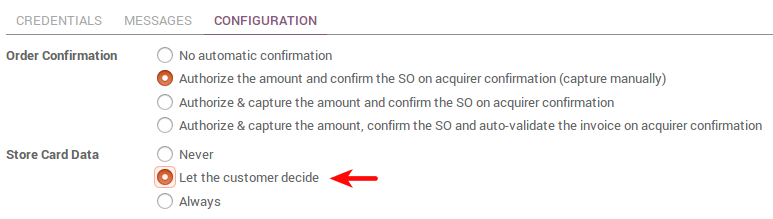
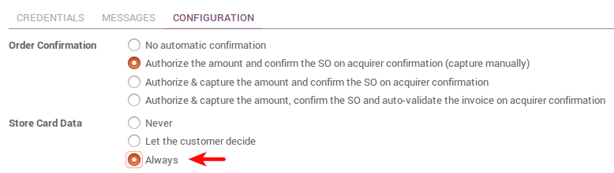

В Odoo доступно несколько методов оплаты, чтобы получить получать оплату в приложениях Интернет-магазин, Продажи, Выставление счетов.
Какие доступны способы оплаты
Банковский перевод
Wire Transfer - это способ оплаты по умолчанию. Клиентам предоставляются ваши банковские реквизиты, чтобы они могли самостоятельно оплатить через свой банк. Этот способ не требует затрат для старта, но он медленный и неэффективный. Реализуйте онлайн оплату, как только сможете!
Платежные эквайеры
Перенаправить клиентов к платежной платформам, чтобы получать деньги без усилий и отслеживать статус оплаты. Odoo поддерживает множество платформ:
- Paypal
- Ingenico
- Authorize.net
- Adyen
- Buckaroo
- PayUmoney
- Sips
- Stripe
Как запустить
После того, как способ оплаты готов к работе, сделать его видимым в платежном интерфейсе и активируйте режим Production.

Как разрешить клиентам сохранять и повторно использовать кредитные карты
Чтобы облегчить оплату постоянным клиентам, вы можете позволить им сохранить и повторно использовать данные кредитных карт, если они хотят. Если это так, токен оплаты будет сохранен в Odoo. Эта опция доступна с Ingenico и Authorize.net.
Вы можете включить эту опцию в форме настройки метода оплаты.
Как автоматически списывать оплату подписки с кредитной карты
Odoo Subscription позволяет вести учет услуг, оказываемых по определенным правилам на постоянной основе. Наряду с этим, вы можете настроить их автоматическую оплату с кредитной карты клиента.
Эта опция доступна с Ingenico и Authorize.net.
Вы можете включить эту опцию в форме настройки метода оплаты.
Таким образом, токен платежа будет записан, когда клиент заказывает подписку, а автоматическое списание средств будет происходить всякий раз, когда выписываетсясчет-фактура на подписку.
Как использовать другие эквайеры (дополнительно)
Odoo может представлять единые платежные требования и перенаправить на любой эквайер оплаты. Но в таком случае не будет обратной связи, т.е. Odoo не сможет автоматически отслеживать состояние оплаты. Вы будете подтверждать заказы вручную, когда вам оплатят заказ.
Как:
Переключитесь в режим разработчика.
Выберите Custom способ оплаты.
Настроить платежную форму (шаблон форма S2S) в соответствии с указаниями вашего провайдера оплаты. Вы можете начать с того, что скопировать кнопку default_acquirer_button.
Другие настройки
Odoo также может быть использован для более продвинутых платежных процессов таких, как рассрочка(например, Paypal Installment Plans).
Такая настройка услуги производится по требованию нашими техническими специалистами, исходя из собственных требований. Бизнес-консультант Odoo может помочь решить Вам такой вопрос. Свяжитесь с нами.